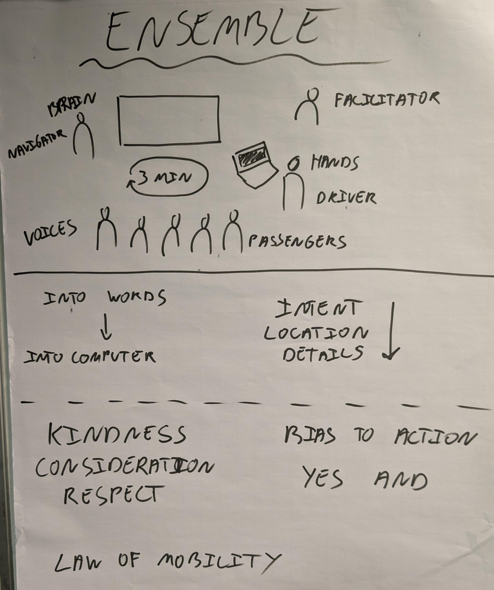

The Fluxx ensemble exercise
Earlier this week I ran a full-day workshop at the excellent HUSTEF conference on working in an ensemble (aka mob programming/testing or software teaming). As part of the workshop I tried out a new exercise, in which participants were allowed to change the rules of the ensemble. The goal was to experience why the basic rules of ensembling are the way they are and what happens if they are different.
Since the participants really liked the exercise, I figured I’d write about it and name it: the Fluxx ensemble exercise. For those not familiar with Fluxx: it is a card game in which changing the rules is a key part of the game. It’s one of my favourite games.
Before I go into the exercise, though, I’ll first need to explain the basic rules of ensembling.
The basic of rules of ensembling
When I run an ensembling workshop, I like to put the basic rules on a flip chart (credit to Lisi Hocke for the inspiration):

I am not going to explain everything on the flip chart. I’ll limit myself to the rules relevant to how the exercise went during the workshop.
The roles
There are four roles in an ensemble: facilitator, driver (hands), navigator (brain), and passengers (voices).
The facilitator is exactly that: they don’t participate, they guide the ensemble when needed.
The driver (hands) is the person sitting behind the computer. They turn the computer in an intelligent input device. In essence (although there is some nuance to it) they do as they are told by the navigator.
The navigator (brain) is the person making the decisions on what to do next. They listen to what the passengers (voices) say, communicate to the rest of the ensemble what’s the next thing they want to achieve, and they give instructions to the driver (hands).
The passengers (voices) share their observations and ideas with the navigator (brain). This can either happen out of their own accord, or because the navigator (brain) actively asks for their input.
The rotation
Every few minutes the people in the ensemble (driver, navigator, passengers) rotate through the roles. I prefer to have the navigator become the driver, the driver a passenger, and a passenger to become the new navigator. The reason for that is that it makes it very clear to the navigator that they are no longer the navigator. They no longer make the decisions (navigator), nor provide input for the decisions (passengers). They are there to execute the decisions (driver).
For the duration of the rotations 3 minutes works well. It’s long enough to accomplish something and short enough that the new navigator needs to continue the thread of the previous one. The duration of the rotations is one of the counter-intuitive aspects of ensembling. People who haven’t participated in an ensemble often want to make the rotations longer, while as a general rule shorter is better.
What the rules are meant to achieve
The rules of ensembling are meant as forcing functions or enabling constraints. They don’t exist for their own sake, they are meant to make something happen. And every ensemble I’ve ever facilitated quite quickly starts to loosen up the rules a bit. Most of the time in a good way, because they do have the rules in the back of their minds. And that’s where the best ensembling happens: in the grey area where you don’t always follow the letter of the rules, but you do follow their intent. It’s also what makes facilitating an ensemble both fun and interesting each time.
Good ensembling means that everyone is on the same page about what the next thing is the ensemble wants to achieve. There might be differences to what degree every member in the ensemble knows how to achieve it, though. That’s fine, because that’s the strength of an ensemble. You get something done as a group, with every participant either contributing or learning
The Fluxx ensemble exercise
In the Fluxx ensemble exercise you start by brainstorming possible changes to the rules. Those changes can be things you believe that will make the ensemble better, or worse, or you might not know. The goal is to experience a different ruleset, not to find the optimal set of rules for this particular ensemble.
So an important aspect is to make sure that the exercise remains safe. It’s fine if things become a little uncomfortable, but they should never become unsafe. For that reason every proposed change requires consent (no objection) from each of the participants. And they are free to withdraw their consent at any time.
Once you’ve brainstormed potential rule changes and everyone has given their consent, you start the ensemble. The only twist is that the navigator can add or remove any rule of the ensemble at the start of a rotation. (Including getting rid of the navigator role, which adds a little challenge for the facilitator.)
To keep track of which rules were in play, I used the flip chart with the rules. All the potential changes where on post-it notes. So if they were in play, we moved them to the top of the flip chart. If they were not, we moved them to the bottom. One thing to keep in mind is that some rules are mutually exclusive, so make sure to remove the conflicting rules when bringing a new one into play.
The rule changes we didn’t bring into play
The Fluxx ensemble exercise was the the third ensembling session of the workshop. So the participants had some experience working in an ensemble. First doing some exploratory testing and then working on some test automation. For this exercise I had decided we’d do some more exploratory testing, but on a different application: the infamous parking calculator.
The participants and I brainstormed 13 rule changes. Six of those we never brought into play:
- 2 drivers (e.g. one for doing and one for note-taking, both screens are visible to the whole ensemble)
- fixed roles, so no rotation
- navigator decides when to rotate
- facilitator picks the driver and the navigator
- navigator is the driver
- longer rotations
The rule changes we did bring into play
The following rules we did bring into play, sometimes in combination with each other.
No navigator
No navigator means there’s only a driver (hands) and passengers (voices). The participants felt this was the worst rule change. Things got chaotic, although they also agreed things could have gotten a lot worse than they did. One participant remarked that it felt too comfortable: as a passenger, you could just sit there and do nothing.
Passengers only talk when they’re asked to
The participants disliked this rule, as it killed the dynamic of the ensemble. I did point out that quite a few times one of the passengers told the navigator they had an idea and that the navigator was receptive to the input. So we didn’t end up in a full navigator-as-dictator situation.
Shorter rotations
The navigator decided to shorten the rotation to 2 minutes. This made it very clear that to get anything done, the next navigator needs to build on what the previous navigator was doing. In general participants found 2 minute-rotations too short. One participant said it felt liberating: since you didn’t get much time as a navigator, there was less pressure to get everything you hda thought of, done.
Rotate at the end of an action
Every rotation the navigator gets to do one action. Once the action is completed, the roles rotate. This brought focus to what the navigator wanted to do and highlighted the importance of expressing intent. While this rule was into play, the ensemble also found one bug that was not in scope of the intent. They simply added the bug to their testing notes and returned to their original intent.
Finish action before rotating
This rule allowed the navigator and the driver to finish the thing they were doing at the end of a rotation. This raises the interesting question of what the boundaries are of “the thing you are doing”. It also means rotations take longer than their set time, because almost each one is extended with some extra time. A risk I identified but that never fully materialized, is that the extension time becomes this indefinite in-between time. A pause in which participants might engage in longer discussions, while not proceeding with the ensemble.
Whoever has an idea, becomes the navigator.
If you have an idea on what to do next, you become the navigator for that idea. This change in rules raised the question on how to decide when to change navigator and what the size of an idea was.
It made me wonder if this rule works better for ensemble programming than for ensemble testing. In ensemble programming you are often working towards a specific goal. So whoever comes up with the next step to get the ensemble closer to the goal, gets to be the navigator. In ensemble testing (especially exploratory testing) you are constantly making decisions on what the next specific goal should be.
30 seconds warning before end of rotation
30 seconds before the end of the rotation, the facilitator signals to the ensemble there’s half a minute left. The participants agreed that it was an ok rule, but nothing more.
Have you tried ensembling? If not, would you like to? What rules would you want to change to see what happens?
If you try out this exercise, please let me know how it went!